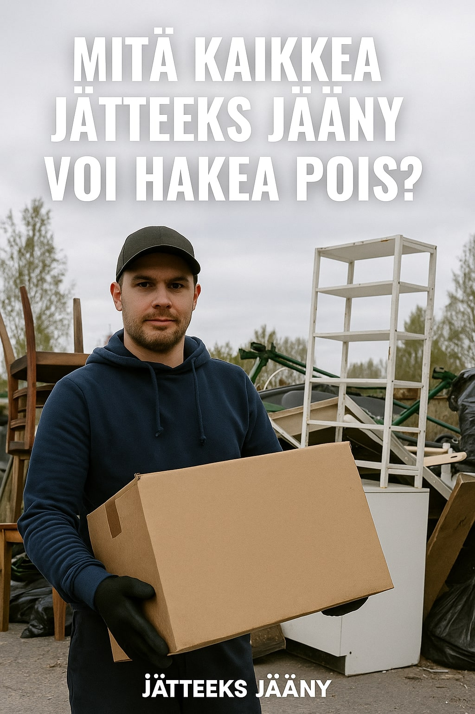
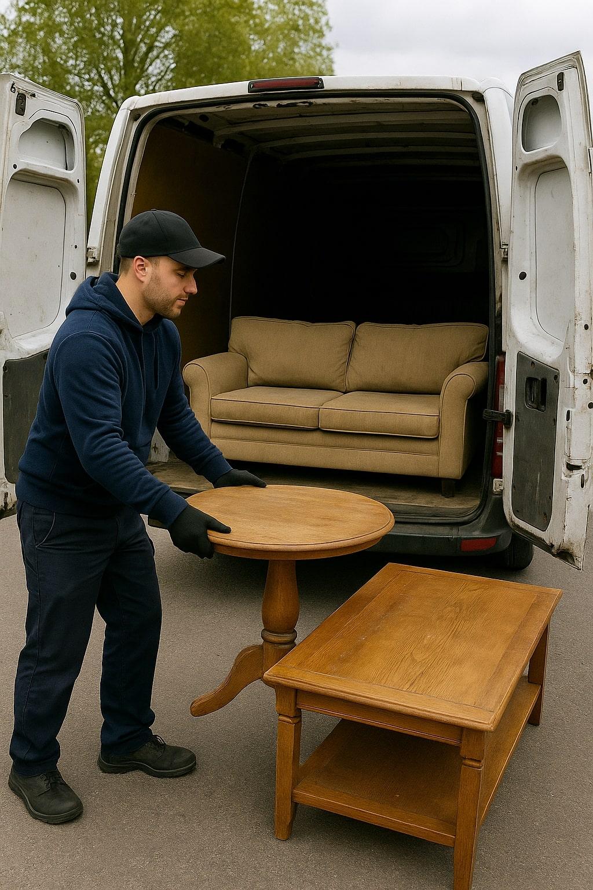

Onko kotiisi tai varastoosi kertynyt ylimääräisiä tavaroita, joita et saa itse kuljetettua kaatopaikalle? Jätteeks Jääny tarjoaa romun nouto -palvelun Oulussa, joka tekee eroon pääsemisestä helppoa ja vaivatonta.
Tilaa nouto nytSen sijaan, että vuokraisit peräkärryn, nostelisit painavia sohvia ja käyttäisit aikaa jonottamiseen jäteasemalla, voit tilata Jätteeks Jääny -tiimin paikalle. Me hoidamme kaiken puolestasi – säästät aikaa, vaivaa ja selkävaivoja.
Jätteeks Jääny huolehtii kierrätyksestä ja lajittelusta. Käyttökelpoiset huonekalut voidaan toimittaa uusiokäyttöön, elektroniikka käsitellään asianmukaisesti ja pihajätteet lajitellaan ympäristöystävällisesti.
Hinta määräytyy tavaran määrän, laadun ja kuljetusmatkan mukaan. Jätteeks Jääny antaa aina selkeän tarjouksen etukäteen – ei piilokuluja eikä yllätyksiä.
Tilaa nouto nyt1. Hakeeko Jätteeks Jääny myös yksittäisen sohvan?
Kyllä, voit tilata palvelun myös yksittäisille huonekaluille.
2. Mitä teen, jos minulla on paljon erilaista romua?
Lähetä kuva tai lista tavaroista, niin arvioimme noudon hinnan ja aikataulun.
3. Hakeeko Jätteeks Jääny myös kodinkoneet?
Kyllä – pesukoneet, jääkaapit, televisiot ja muut kuljetetaan ja kierrätetään asianmukaisesti.
4. Kuinka nopeasti noudon saa?
Usein jopa saman päivän aikana, viimeistään seuraavana päivänä.
Jos haluat päästä helposti eroon turhista tavaroista, Jätteeks Jääny on luotettava valinta romun noutoon Oulussa. Meidän kauttamme saat nopean, ekologisen ja edullisen palvelun – ilman ylimääräistä stressiä.
Tilaa romun nouto Oulussa – Ota yhteyttä nyt!